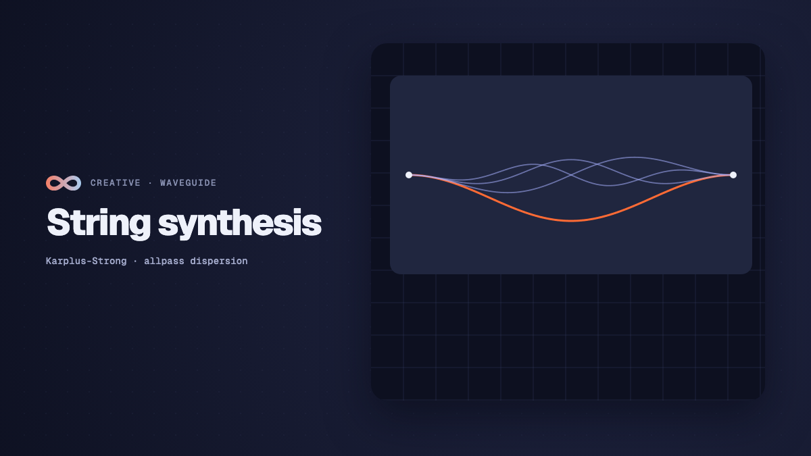

Creative
Physical modelling string synthesis in real time
How physical modelling string synthesis works: digital waveguides, Karplus-Strong delay loops, allpass dispersion, bow friction, and acoustic modal bodies.

on this page
- What physical modelling solves in computer music
- Digital waveguides: bidirectional delay lines and wave propagation
- Tuning and fractional delay: solving the phase allpass filter
- Dispersion and stiffness: inharmonicity across higher partials
- Exciter mechanics: pluck, hammer strike, and bow friction
- Acoustic radiation: mode tables and modal bodies
- Building an audiovisual physical modelling patch in Infinite
- Performance characteristics and real-time execution
Physical modelling synthesis generates sound by simulating the actual physical mechanics of vibrating matter rather than playing static wavetables or filtering raw geometric waveforms. While traditional subtractive synthesis uses mathematical approximations like saw and square waves, and sample libraries replay pre-recorded audio recordings of instruments, physical modelling calculates the physical wave propagation, boundary reflections, internal material damping, and structural resonance of acoustic objects in code.
When you pluck, strike, or bow an acoustic string, its sonic timbre evolves dynamically across every note. The attack transient reflects the pick position along the string length, the mechanical stiffness produces subtle inharmonic frequency shifts across higher partials, and the wooden instrument body colours the acoustic radiation through dozens of coupled resonant modes.
In real-time audiovisual environments like Infinite, physical modelling provides an expressive foundation for both sound design and generative visuals. Because the underlying physical variables (such as string velocity, bridge displacement, and energy dissipation) are evaluated directly on the audio thread, they can be routed seamlessly into 3D geometry deformation and real-time shaders.
Here is an in-depth examination of how digital waveguide physical modelling operates, how fractional allpass filters maintain pitch accuracy, how dispersion creates natural inharmonicity, how exciter mechanics simulate plucking, striking, and bowing, and how to patch a complete physical modelling instrument using native nodes.

What physical modelling solves in computer music
The central challenge with electronic instruments is acoustic realism and continuous expressiveness. A sampled acoustic guitar or cello can capture the timbre of an isolated note, but it struggles with real-time articulation. When a performer alters bow pressure, slides between frets, or alternates between fingerpicking and a sharp plectrum, a sample library must crossfade between distinct recordings. This often creates phase cancellation, unnatural chorusing, or static, repetitive transients known as the machine-gun effect.
Subtractive synthesis offers continuous modulation through filters and envelopes, but its harmonic structure remains synthetic. An oscillator running through a resonant lowpass filter lacks the complex modal distribution and material losses of real wood and vibrating steel.
Physical modelling solves this by simulating the physical acoustic system from first principles. When you alter a parameter like string stiffness or bow velocity, you are not adjusting an artificial audio filter: you are modifying the physical differential equation governing wave motion. The resulting acoustic response reacts organically, producing natural transients, sympathetic resonance, and expressive feedback.
Digital waveguides: bidirectional delay lines and wave propagation
The foundation of modern string modelling is the digital waveguide, formulated by Julius O. Smith (1992) as an extension of the pioneering Karplus-Strong plucked string algorithm (1983).
The physical motion of an ideal vibrating string is governed by the one-dimensional acoustic wave equation:
d^2 y / dt^2 = c^2 * (d^2 y / dx^2)Where y represents transverse displacement, t is time, x is the spatial coordinate along the string, and c is the wave propagation speed determined by string tension T and linear mass density mu (c = sqrt(T / mu)).
D'Alembert showed that any solution to this differential equation can be decomposed into two independent travelling waves moving in opposite directions:
y(x, t) = y_plus(t - x/c) + y_minus(t + x/c)Here, y_plus represents a wave travelling to the right (towards the bridge), and y_minus represents a wave travelling to the left (towards the nut).
Discretisation into digital delay lines
In a computer simulation, continuous spatial wave propagation is discretised into two tapped delay lines. The total round-trip propagation time corresponds to the period of the fundamental frequency f_0:
Period T = 1.0 / f_0
Delay samples N = f_s / f_0Where f_s is the digital sample rate (such as 44,100 Hz or 48,000 Hz).
At the string boundaries, the travelling waves undergo physical reflections:
- The nut (fret boundary): Assumed to be rigid. The string displacement must be zero at
x = 0, forcing an inverting reflection with reflection coefficientR_0 = -1. The wave reflects with inverted phase. - The bridge: The string terminates at a bridge that transfers energy to the resonant instrument body. The bridge reflection is modelled by an inverting reflection combined with a frequency-dependent loop filter
H_loop(z)that accounts for energy loss and phase delay.
When a pulse is injected into the bidirectional delay loop, it travels back and forth between the nut and bridge. Each round trip corresponds to one cycle of the fundamental pitch, producing a rich harmonic spectrum.
Tuning and fractional delay: solving the phase allpass filter
In a naive digital delay line, the buffer length is constrained to integer sample counts N = floor(f_s / f_0).
This creates a serious musical problem: pitch quantization. For high notes, the integer rounding error causes severe out-of-tune intonation. For instance, at a sample rate of 48 kHz:
- A note at 1000 Hz requires
48000 / 1000 = 48.0samples. - The next semitone up (1059.25 Hz) requires
48000 / 1059.25 = 45.315samples. - Rounding to 45 samples produces 1066.67 Hz, an unacceptable tuning error of over 12 cents.
To achieve exact microtonal and chromatic intonation, the delay loop must support fractional sample delays.
The first-order allpass filter
In the native String node in Infinite, fractional delay is implemented using a first-order allpass filter:
A(z) = (a + z^-1) / (1.0 + a * z^-1)An allpass filter has a flat magnitude frequency response of exactly 1.0 across all frequencies, but its phase response introduces a controllable group delay without causing any artificial attenuation or damping in the loop.
The phase delay D(w) of the allpass filter at angular frequency w radians per sample is:
D(w) = - (atan2(-sin(w), a + cos(w)) - atan2(-a * sin(w), 1.0 + a * cos(w))) / wBecause delay decreases monotonically as coefficient a rises, the engine solves for the exact coefficient a using a numerical bisection solver across 40 iterations on every parameter update chunk:
double SolveAllpass(double delay, double w)
{
double lo = -0.95, hi = 0.95;
for (int it = 0; it < 40; it++)
{
const double mid = 0.5 * (lo + hi);
if (AllpassDelay(mid, w) > delay)
lo = mid;
else
hi = mid;
}
return 0.5 * (lo + hi);
}By subtracting the fractional delay of the allpass filter and loop filter from the total delay requirement, the fundamental pitch f_0 remains mathematically exact, regardless of how other controls like decay, tone, and stiffness are adjusted.
Dispersion and stiffness: inharmonicity across higher partials
In a purely flexible, mathematical string, all harmonic partials are exact integer multiples of the fundamental frequency: f_k = k * f_0.
Real physical strings (such as piano wire, bass guitar strings, or harp strings), however, possess inherent bending stiffness. A stiff wire resists bending, introducing an additional restoring force governed by the Euler-Bernoulli beam equation:
d^2 y / dt^2 = c^2 * (d^2 y / dx^2) - kappa^2 * (d^4 y / dx^4)Where kappa is the stiffness parameter.
The consequence of this fourth-order derivative is dispersion: higher-frequency waves travel along the string faster than lower-frequency waves. As a result, the higher partials are displaced upwards in frequency, following the inharmonicity formula:
f_k = k * f_0 * sqrt(1.0 + B * k^2)Where B is the inharmonicity coefficient.
Modelling dispersion with allpass cascades
Without stiffness, a plucked digital string sounds sterile and electronic, resembling a simple comb-filtered pulse. When stiffness is introduced, the upper partials ring with the distinct metallic attack and organic complexity heard in real acoustic instruments.
In Infinite's String node, dispersion is implemented using a cascade of four first-order allpass filters placed directly in the feedback path of the bridge. Each allpass stage adds frequency-dependent phase delay, slightly advancing the arrival time of higher harmonics relative to the fundamental.
Modulating the stiffness parameter shifts the string character from a warm, flexible nylon classical guitar string to a taut, clanging steel piano wire or metallic bass string.
Exciter mechanics: pluck, hammer strike, and bow friction
A physical string model requires an excitation source to inject kinetic energy into the delay lines. The nature of this excitation dictates whether the instrument sounds plucked, struck, or bowed.
The String node features three distinct physical exciter models:
1. Pluck excitation
A plectrum or finger plucks a string by displacing it at a specific normalised position x_rel (from 0.0 at the bridge to 1.0 at the nut). When released, the initial triangular displacement splits into two identical half-amplitude pulses propagating in opposite directions towards the nut and bridge.
The point of excitation introduces comb filtering. Plucking near the bridge (position = 0.1) suppresses low frequencies and emphasizes sharp, nasal upper harmonics. Plucking near the centre (position = 0.5) eliminates even harmonics, producing a hollow, clarinet-like tone.
The hardness parameter controls the pulse duration. A hard pick generates an instantaneous sharp spike, exciting high-frequency energy up to the Nyquist frequency. A soft finger widens the pulse up to tenfold, naturally rounding and softening the transient attack.
2. Strike excitation
A strike models a piano or dulcimer felt hammer hitting the string. Unlike an instantaneous pluck, a felt hammer has physical mass and compliant elasticity.
The interaction is non-linear: a soft strike compresses the felt gently, resulting in a prolonged contact duration and a warm, mellow tone. A heavy strike compresses the felt rapidly into its dense wooden core, drastically shortening the contact duration and releasing a burst of bright, forceful upper partials.
In code, the pulse length scales dynamically with incoming note velocity:
pulseLen = max(2, round(sampleRate * (0.004 - 0.003 * velocity)));3. Bow excitation (Smith's friction junction)
Bowing a string is a continuous, self-oscillating non-linear process driven by friction between sticky rosin-coated horsehair and the string.
The bow moves at a constant speed v_bow. The interaction alternates rapidly between two phases:
- Stick phase: Static friction holds the string against the bow hair, dragging the string along with the bow until tension forces overcome friction.
- Slip phase: The string breaks free and snaps backwards towards its resting point under dynamic friction.
This stick-slip mechanism is modelled using a non-linear friction characteristic curve:
F_friction(v_rel) = sign(v_rel) * (mu_dynamic + (mu_static - mu_dynamic) * exp(-c * |v_rel|)) * F_bowWhere v_rel = v_bow - v_string is the relative velocity between bow and string, and F_bow is normal bow pressure.
The String node implements bow friction with oversampled integration (up to 8x internal oversampling for high notes) to eliminate digital limit cycles. Modulating the pressure and noise parameters allows you to recreate authentic string scrapes, raspy rosin friction, and the smooth transition into pure sustained Helmholtz bowing.
Acoustic radiation: mode tables and modal bodies
An isolated vibrating string has very little surface area. In an acoustic instrument, virtually all audible sound radiates from the resonant wooden soundboard and body cavity (the body of a guitar, violin, or cello).
The instrument body acts as a complex acoustic filter with dozens of closely spaced resonant peaks. Rather than running a static graphic equaliser, Infinite couples the string output to a shared modal resonator bank (DenseBody).
The body simulation evaluates ten parallel second-order modal bandpass resonators, each configured with an exact centre frequency, bandwidth, and amplitude mode table:
y_body(t) = sum_{m=1}^{10} A_m * exp(-alpha_m * t) * sin(omega_m * t + phi_m)Infinite includes five calibrated body profiles fitted from acoustic measurements of real instruments:
| Body profile | Key acoustic resonances | Sonic character |
|---|---|---|
| Box | Helmholtz cavity (98 Hz) and primary plate mode (204 Hz) | Small hollow acoustic box with dry, woody decay |
| Guitar | Air mode A0 (99 Hz), top plate T(1,1) pair (199 Hz, 392 Hz) | Warm, balanced acoustic dreadnought and classical guitar |
| Harp | Soundboard resonance (211 Hz) and pillar modes (325 Hz) | Open, airy, resonant decay with singing sustain |
| Violin | Air mode A0 (281 Hz), corpus corpus modes B1-/B1+ (445 Hz, 535 Hz) | Focused, expressive acoustic projection with bite |
| Cello | Deep cavity mode (105 Hz) and body resonances (199 Hz, 320 Hz) | Rich, woody, authoritative low-frequency resonance |
Because all active polyphonic voices feed into the same shared body filter, notes interact acoustically, vibrating the simulated soundboard and creating natural sympathetic depth.
Building an audiovisual physical modelling patch in Infinite
In Infinite, sound synthesis and visual rendering run on the same unified graph. You can patch an expressive physical modelling instrument and use its internal acoustics to deform 3D meshes in real time.
+----------------+ note +------------------+ audio +------------------+
| Note Sequencer | --------------> | String (Synth) | --------------> | Resonator Bank |
+----------------+ +------------------+ +------------------+
^ |
| pressure mod | audio
+----------------+ | v
| LFO | -------------------------+ +------------------+
+----------------+ | Audio Analyze |
+------------------+
|
| spectral RMS
v
+----------------+ mesh +--------------------+ mesh +------------------+
| Cylinder Wire | --------------> | Audio Displacement | ------------> | Render 3D |
+----------------+ +--------------------+ +------------------+Step 1: Create the note driver and exciter
- Add a
Note Sequencernode to the canvas. Setdivisionto1/16 syncand program an arpeggiated melodic line. - Add a
Stringnode. Connect the green note output of theNote Sequencerto thenotesinput of theStringnode. - On the
Stringnode, selectexciter: Bowand choosebodyType: Cello. - Set
decayto2.4 s,stiffnessto0.30, andtoneto0.75.
Step 2: Add dynamic expressive modulation
- Add an
LFOnode. Set the shape toTriangleand tempo-sync the rate to1/2 bar. - Connect the LFO output cable to the
pressureparameter of theStringnode. As the LFO oscillates, the simulated bow pressure increases and relaxes, moving naturally between gentle whispers and raspy, full-bodied string sustains. - Add a second slow LFO (or an envelope follower) routed to
position, moving the bowing point between the bridge (sul ponticello) and the fingerboard (sul tasto).
Step 3: Route through the modal resonator and analysis
- Connect the audio output of
Stringto aResonator Banknode to introduce room resonance and spatial depth. - Connect the output to an
Audio Analyzenode. This extracts real-time amplitude envelopes, spectral RMS energy, and pitch tracking data on every audio buffer.
Step 4: Deform 3D geometry in Render 3D
- Add a
Cylindermesh primitive and set it to wireframe mode to represent a vibrating physical string. - Add an
Audio Displacementnode. Connect the mesh output into its geometry input, and connect thespectralRmsoutput fromAudio Analyzeto the displacement amplitude. - Wire the resulting geometry into
Render 3D.
When a note is bowed, the 3D string geometry physically vibrates with travelling wave deformations matching the exact frequency, damping, and decay of the acoustic digital waveguide.
Performance characteristics and real-time execution
Running complex numerical differential equations and allpass filter cascades in real time requires strict computational discipline:
- Eight-voice polyphony: The
Stringnode supports up to 8 polyphonic voices. Unused voices are culled instantaneously when their decay envelope drops below -96 dB, conserving CPU cycles. - Chunked parameter updates: Heavy mathematical operations (such as the 40-iteration allpass phase solver and modal coefficient recalculations) run once every 32 samples (0.7 ms at 48 kHz). Sample-rate audio buffers interpolate these values using lock-free atomic parameter mailboxes, avoiding audio dropouts or zipper noise.
- SIMD vectorisation: The modal body filter bank evaluates multiple biquad modes in parallel using AVX2 and ARM Neon vector instructions.
- Zero dynamic memory allocations: All waveguide ring buffers, allpass delay lines, and mode state arrays are statically pre-allocated at startup. The audio thread executes without heap allocations or mutex contention.
By combining the physical mathematics of acoustic wave propagation with real-time modular execution, physical modelling synthesis delivers responsive instruments that feel alive under your fingers and on screen.
Explore native sound design and modular synthesis in the Infinite Library, inspect the full Node Reference, or read our deep dive on audio-reactive GLSL shaders.